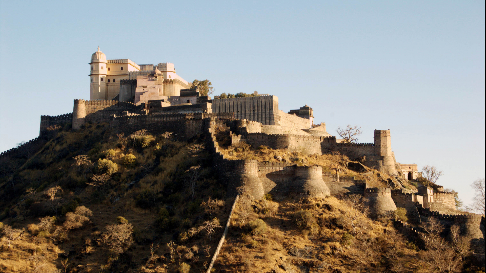

About Kumbhalgarh Fort
Kumbhalgarh Fort, also spelled as Kumbhalgarh, is a historic fortress located in the Rajsamand district of the Indian state of Rajasthan. It is renowned for its impressive architecture, rich history, and strategic significance.
History: Kumbhalgarh Fort was built in the 15th century by Rana Kumbha, a prominent Mewar ruler, in the 15th century. The fort served as a stronghold of the Mewar kingdom and was known for its impregnability, with a 36-kilometer-long wall that is considered the second longest continuous wall after the Great Wall of China. Architecture: The fort's architecture is a blend of Rajput and Mughal styles. It features numerous temples, palaces, and other structures within its walls, including the Badal Mahal (Palace of Clouds), the Kumbha Palace, and the Vishnu Temple. The wall surrounding the fort is a prominent feature and offers breathtaking views of the surrounding Aravalli hills. Wall: The fort's massive wall is one of its most remarkable features. It is known as the Kumbhalgarh Wall and is approximately 15 feet wide, making it wide enough for eight horses to march abreast. The wall has numerous bastions and watchtowers, which were once used for defense and as vantage points. Temples: Kumbhalgarh houses several temples within its premises. The most famous among them is the Neelkanth Mahadev Temple, dedicated to Lord Shiva. The Badal Mahal also contains several beautiful Jain temples. UNESCO World Heritage Site: Kumbhalgarh Fort, along with a group of six other Rajasthan Hill Forts, is collectively designated as a UNESCO World Heritage Site since 2013. The other forts in this group are Chittorgarh, Ranthambore, Gagron, Amber, Jaisalmer, and Sawai Madhopur.